Guild Asset Registry
Orchard Vale Character Registry
Transparent helpers, avatars, advisors, clerks, stewards, and specialists for front-end screens.Cast Overview
A working guild of specialists
Use these characters as assistant figures, card illustrations, empty-state guides, assignees, comment authors, onboarding stewards, and status companions.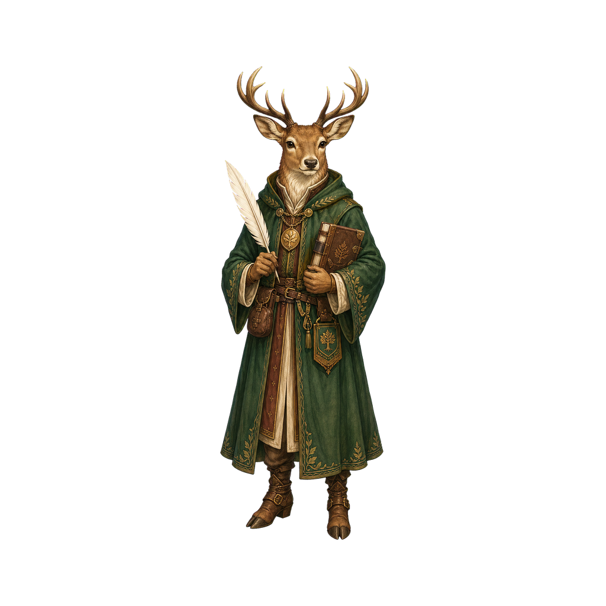
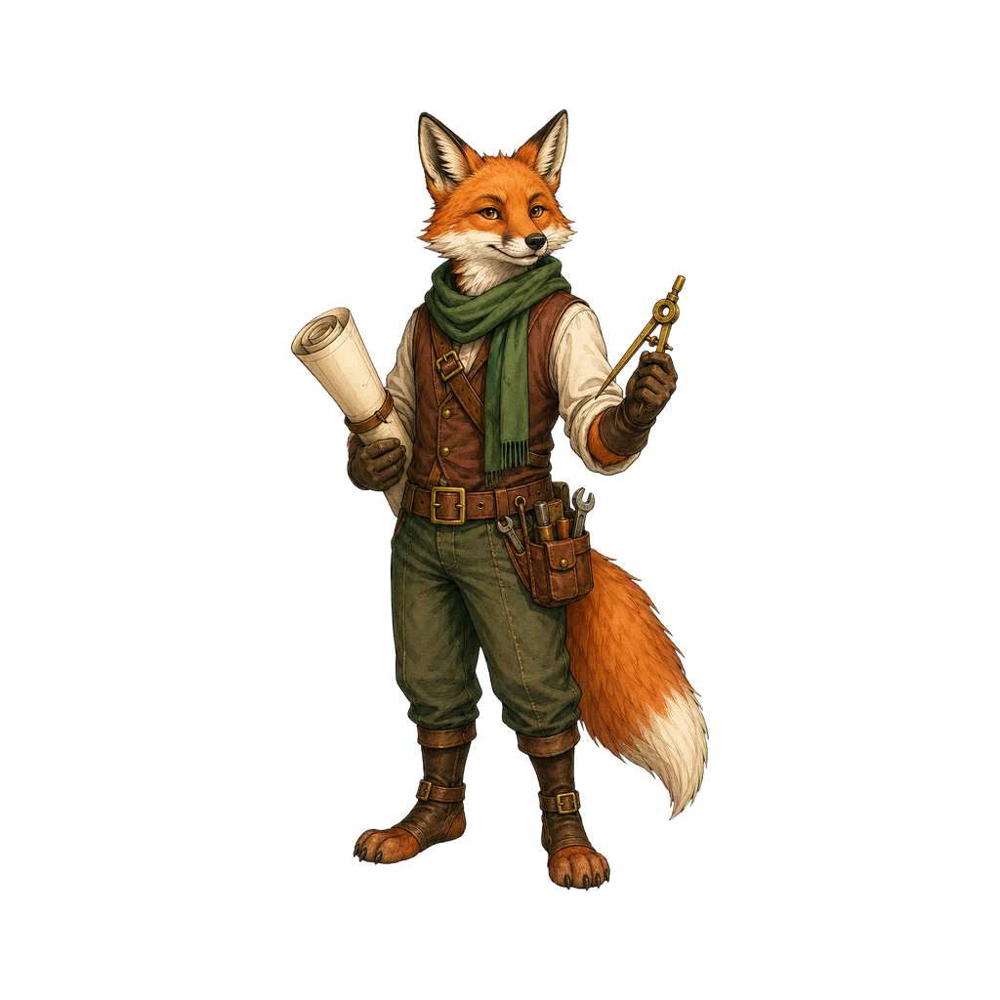
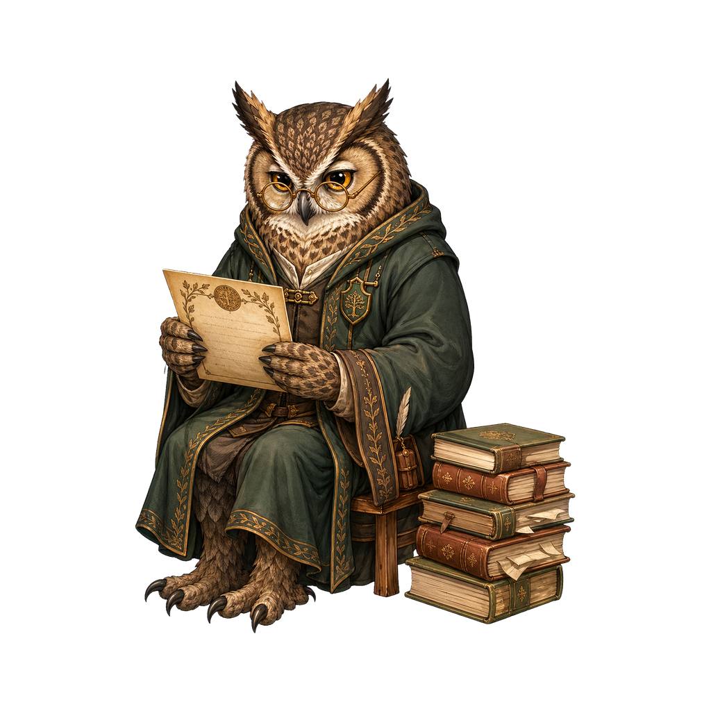
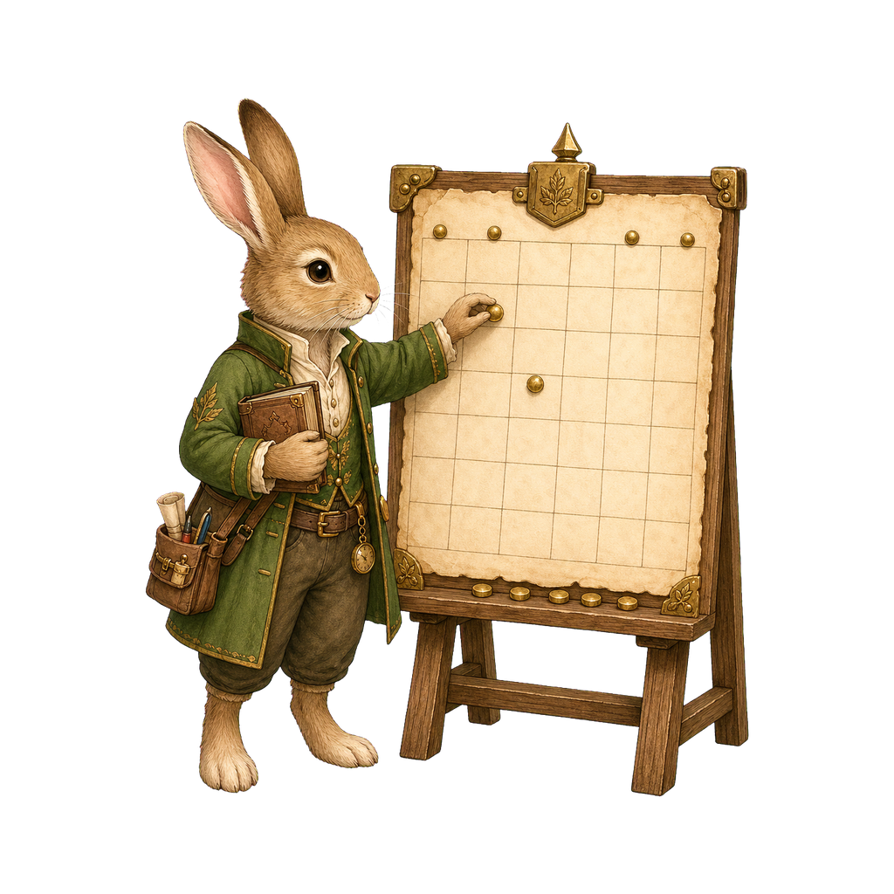
Implementation
Fox Implementer
Focused, practical, ready to ship. Strong fit for active work cards, selected tasks, implementation notes, and review queues.
BuilderReviewerFocus
Orchestration
Badger Orchestrator
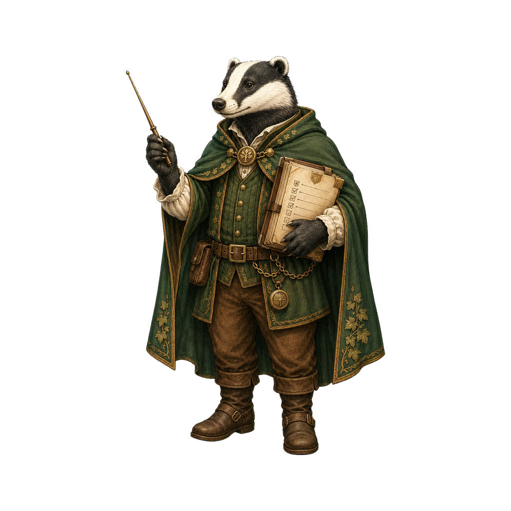
Steady command presence for dashboards, planning panels, status escalations, and command-center moments.
LeadOpsPriority
Scholarship
Owl Scholar
Best for research, writing, citations, audits, knowledge bases, and thoughtful recommendation panels.
ResearchAuditWisdom
Planning
Rabbit Planner
Helpful for project setup, roadmaps, schedule cards, onboarding steps, and friendly guide moments.
ScheduleGuideWelcome
Clerical
Mouse Clerk
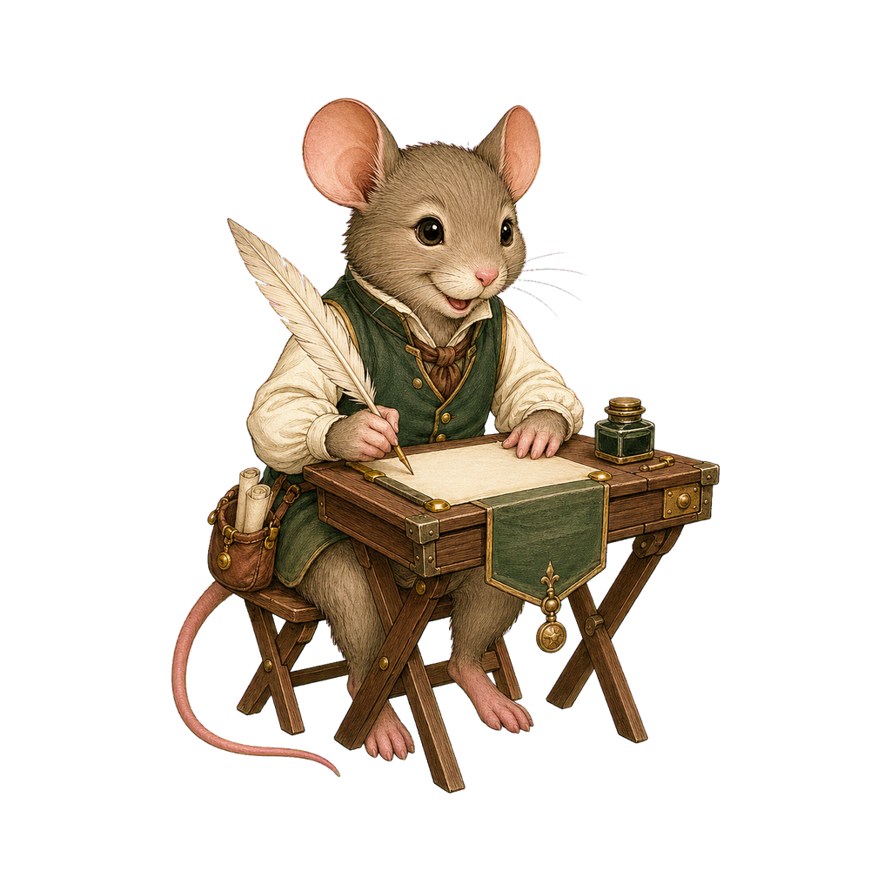
Suited to forms, notes, comments, saved drafts, small task states, and data-entry surfaces.
NotesFormsDrafts
Engineering
Mole Engineer
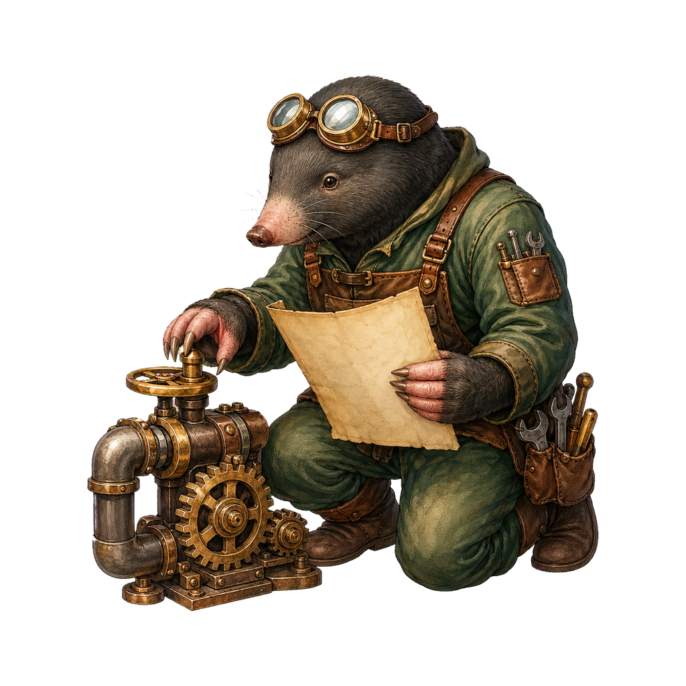
Grounded technical character for infrastructure, repairs, debugging, dependency work, and maintenance states.
InfraRepairDebug
Delivery
Robin Courier
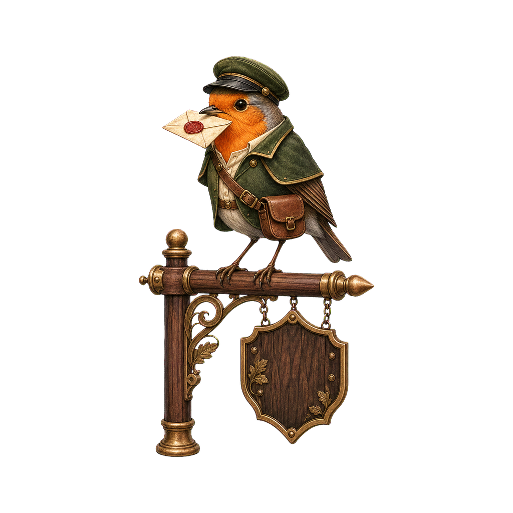
Lightweight messenger for notifications, updates, announcements, reminders, and delivery status.
NewsAlertsDelivery
Success
Otter Success Steward
Warm support presence for help centers, account health, customer success, resolution, and follow-up panels.
SupportCareResolve
Resources
Squirrel Resource Keeper
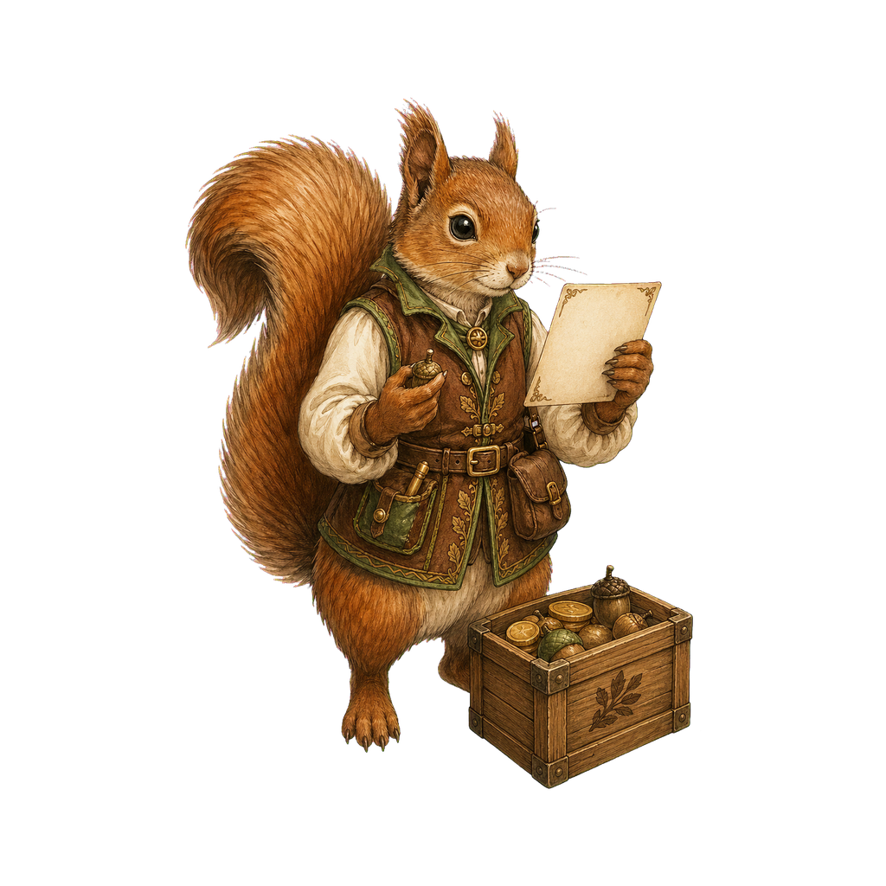
Busy, inventory-minded character for assets, budgets, supplies, queues, allocation, and capacity planning.
InventoryBudgetCapacity
Governance
Deer Governance Steward
Calm authority for approvals, policies, board reviews, compliance states, permissions, and executive summaries.
PolicyApprovalTrust
Reference Sheets
Complete set at a glance
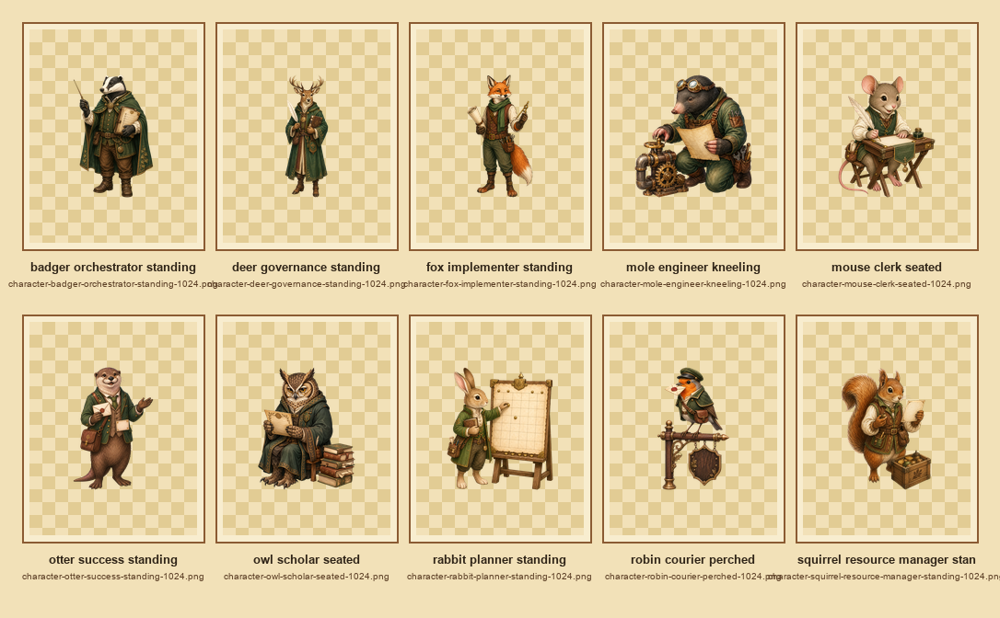
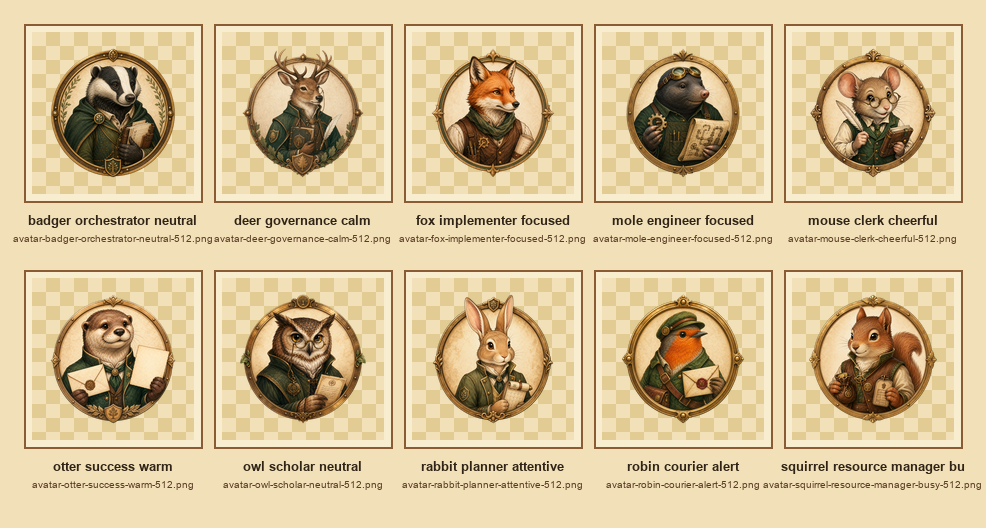